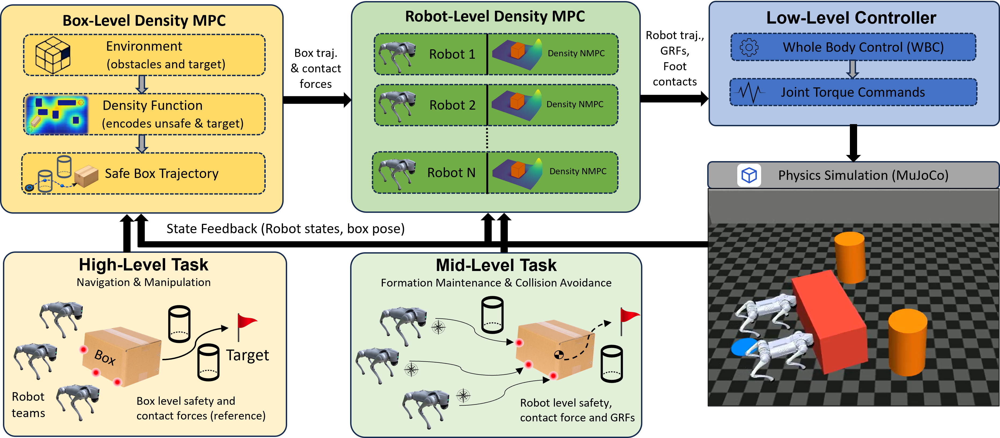
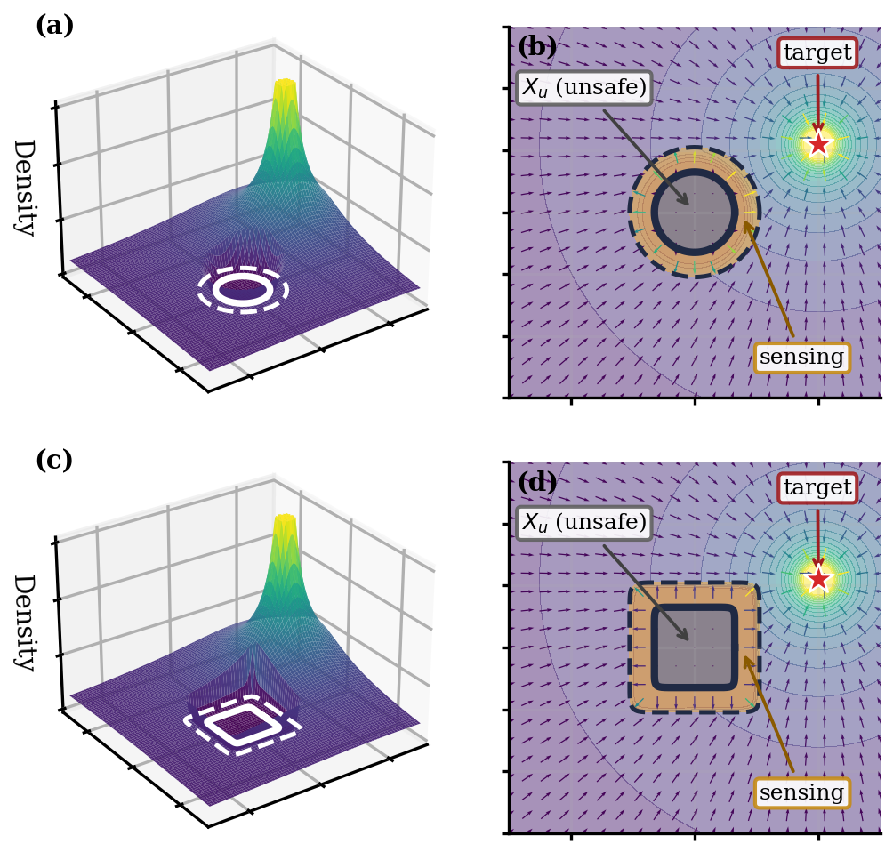
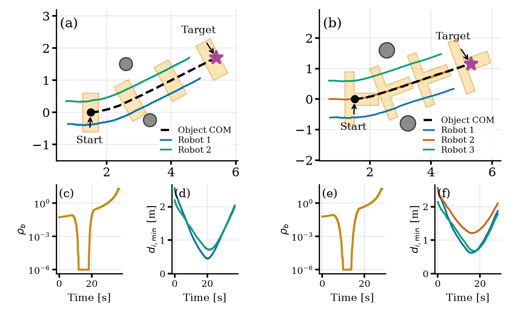

Density-safe collaborative transport, for a team
This paper presents a hierarchical density-based model predictive control framework for safe collaborative manipulation by multiple quadrupedal robots. The framework enables a team of robots to push a shared object to a desired pose using only the initial and goal poses, without requiring a precomputed reference trajectory. A box-level MPC optimizes contact forces while enforcing a control-density constraint for goal convergence and obstacle avoidance. Each robot-level whole-body MPC tracks its moving contact location while accounting for static obstacles and the time-varying positions of neighboring robots. The approach is evaluated in MuJoCo using whole-body contact dynamics for two and three Unitree Go2 quadrupeds collaboratively pushing rigid objects through narrow passages. Comparisons with matched Control Barrier Function (CBF) MPC and RRT*-plus-tracking baselines demonstrate the effectiveness of the proposed density-based formulation for push-only, force- and torque-coupled manipulation tasks.
Hierarchical, density-safe architecture
A box-level density MPC plans each robot's push force and contact offset from only a start and goal pose; a robot-level density NMPC then tracks its assigned, moving contact point on real Go2 whole-body and contact dynamics. Both levels certify safety through the same control-density-function formalism, evaluated against a live, per-step unsafe set that folds in static obstacles and — at the robot level — teammate positions.


The two hardest evaluated scenarios
Both scenarios push a box between two static obstacles at a heading matching the corridor diagonal, inside a closed rectangular boundary wall, on real Unitree Go2 robot-level NMPC and contact dynamics — not a kinematic or single-rigid-body approximation.
Dual-quadruped — N=2 robots, gap D = 1.90 m
clearance 0.02 m · t_conv 38.50 s

Converges in 38.50 s with the box's true rotated-footprint clearance at 0.02 m to the obstacle's physical radius — a graze at the density constraint's own worst-case Minkowski boundary, with no velocity discontinuity at closest approach, confirming a true near-miss rather than a hard collision. Both the box-level and robot-level density constraints are active for this result.
Triple-quadruped — N=3 robots, gap D = 2.49 m
clearance 0.04 m · t_conv 28.92 s

Converges in 28.92 s with clearance 0.04 m — going from 2 to 3 contacts and a heavier, geometrically distinct T-box required no change to the box-level MPC formulation, only per-scenario contact geometry and inertial parameters.
Main results table
| Scenario (N) | D (m) | tconv (s) | Failed solves (%) | ρb,peak | Clearance (m) |
|---|---|---|---|---|---|
| Dual-quadruped (2) | 1.90 | 38.50 | 35.4 | 20.0 | 0.02 |
| Triple-quadruped (3) | 2.49 | 28.92 | 40.4 | 20.0 | 0.04 |
"Failed solves" is the fraction of box-level MPC solves that fell back to the last accepted command (not an emergency stop) rather than converging. Clearance is the worst-case distance from the box's true rotated footprint to each obstacle's physical radius over the whole run, not a center-distance proxy.
Controller-performance ablation
| Scenario | N (solves) | Solve time (ms) | Effort/step (N²m²) | Sep. (m) | Pos. RMSE (m) | Vel. RMSE (m/s) |
|---|---|---|---|---|---|---|
| Dual-quadruped | 760 | 1543.2 ± 909.3 | 887.7 ± 145.9 | 0.708 ± 0.041 | 0.0038 | 0.0388 |
| Triple-quadruped | 569 | 1637.3 ± 981.1 | 1250.5 ± 255.4 | 0.603 ± 0.007 | 0.0043 | 0.0367 |
Solve time and effort/step are mean±SD over genuine box-level MPC solve events (solve time additionally Tukey-fence cleaned). Peak density ρb,peak = 20.0 in both scenarios (reported as a point value, not mean±SD, since it is a worst-case bound rather than a typical-case cost). Solve times of order 1 s against a 50 ms real-time budget are the paper's noted solver-cost limitation.

Robot-level density constraint ablation
A second ablation isolates the robot-level density constraint, independent of the box-level avoidance above. All three scenarios converge with the constraint enabled (both levels active) as well as disabled (used for every other result on this page); an extra active safety constraint is not free, so solve time, solve-failure rate, and separation shift slightly rather than uniformly improving.
| Scenario | Constraint | Compl. (s) | Solve (ms) | Solve-failed (%) | Sep. (m) |
|---|---|---|---|---|---|
| Dual, D=2.20m | disabled | 31.93 | 917.7 ± 548.1 | 29.6 | 0.729 ± 0.009 |
| enabled (Ours) | 31.44 | 1270.4 ± 755.9 | 29.4 | 0.723 ± 0.018 | |
| Dual, D=1.90m | disabled | 37.35 | 1546.6 ± 1013.3 | 37.3 | 0.730 ± 0.012 |
| enabled (Ours) | 38.50 | 1543.2 ± 909.3 | 35.4 | 0.708 ± 0.041 | |
| Triple, D=2.49m | disabled | 28.16 | 2548.5 ± 1887.2 | 38.1 | 0.605 ± 0.003 |
| enabled (Ours) | 28.92 | 2431.1 ± 1486.5 | 40.4 | 0.603 ± 0.007 |
The enabled rows also show completion time and solve-failed rate moving oppositely with team size (38.50s / 35.4% at N=2 against 28.92s / 40.4% at N=3), not an isolated team-size effect.
Additional scenario variants
Beyond the two headline gap-crossing results above, the same architecture was exercised on a range of obstacle layouts and maneuvers, at both team sizes. A curated subset is shown below — near-duplicate parameter sweeps, compressed re-encodes, and scratch/dev-iteration outputs are omitted (see report notes).
Dual-quadruped (N = 2)
2 Go2 robots, rectangular box.
Single obstacle, U-turn avoidance
Canonical single-obstacle demo: a dramatic, controlled U-turn (yaw peaks ~36°) around one obstacle, vs. a full spin (112°) with avoidance disabled. Rerun with a closed perimeter wall added to the arena.
Two-obstacle gap crossing
The original two-obstacle gap demo the headline D=1.90m result was tightened from, rerun with a closed perimeter wall around the arena.
Tighter gap, D = 2.20 m
An intermediate gap width between the original and the D=1.90m headline result, rerun with a closed perimeter wall around the arena.
Opposite-side double-obstacle traverse
Two obstacles placed on opposite sides of the direct path, forcing the box to turn one way then the other before reaching the goal, inside a closed perimeter wall.
Same-side double-obstacle U-turn
Two obstacles placed on the same side of the direct path, requiring the box to trace a single continuous U-turn around both before reaching the goal, inside a closed perimeter wall.
Triple-quadruped (N = 3)
3 Go2 robots, heavier T-box.
Single obstacle demo
Three-robot team pushing the T-box past one static obstacle, rerun with a closed perimeter wall around the arena.
Wider gap, D = 2.89 m
The wider precursor gap the D=2.49m headline result was later tightened (~14%) from, rerun with a closed perimeter wall around the arena.
Gap crossing + large turn
Gap-crossing geometry combined with an additional large heading change en route to goal.
Opposite-side double-obstacle traverse
Two obstacles placed on opposite sides of the direct path, forcing the T-box to turn one way then the other before reaching the goal, inside a closed perimeter wall.
Same-side double-obstacle U-turn
Two obstacles placed on the same side of the direct path, requiring the T-box to trace a single continuous U-turn around both before reaching the goal, inside a closed perimeter wall.
Density MPC vs. CBF MPC and RRT*-plus-tracking
Two baselines are run through the identical pipeline. CBF MPC (following Zeng, Zhang & Sreenath, ACC 2021) swaps the box-level MPC's density constraint for one discrete-time CBF constraint per obstacle (same dynamics, cost, and fixed contact offsets), tested on both scenarios. RRT*-plus-tracking (Karaman & Frazzoli, 2011) plans a path once per scenario, inflated by the box's footprint and obstacle radius plus a safety pad, then converts it to a pure-pursuit reference fed to the same box- and robot-level MPCs with density avoidance disabled — obstacle avoidance delegated entirely to the planned path, as in a conventional plan-then-track pipeline. Each method was additionally re-run 10 times per scenario under a small random start-pose perturbation (±0.05 m position, ±3° heading) to check robustness beyond the single deterministic run.
CBF MPC, dual-quadruped
Headline D=1.90 m gap scenario under CBF MPC. This single run converges, 29% slower than density MPC and with a substantially higher box-level solve-failure rate — but over 10 trials with a small start-pose perturbation, CBF MPC only reaches the goal 5/10 times here, against 10/10 for density MPC.
CBF MPC, triple-quadruped
Headline D=2.49 m gap scenario under CBF MPC. It also converges, 7% slower than density MPC and with a higher box-level solve-failure rate (49.3% vs. 40.4%) — and remains fully robust, 10/10, over the same 10-trial perturbation check.
RRT*+tracking, dual-quadruped
Headline D=1.90 m gap scenario under RRT*-plus-tracking (identical MPCs, density avoidance disabled) — the exact geometry the table below's numbers are measured on.
RRT*+tracking, triple-quadruped
Headline D=2.49 m gap scenario under RRT*-plus-tracking (identical MPCs, density avoidance disabled) — the exact geometry the table below's numbers are measured on.
| Method | Success | Time (s) | Min. clearance (m) |
|---|---|---|---|
| Box pushing (n=2) | |||
| Density MPC | 10/10 | 38.61 ± 0.77 | 0.02 |
| CBF MPC | 5/10 | 47.97 ± 0.68 | 0.00 |
| RRT* + tracking | 0/10 | — | 0.50 |
| T-shape pushing (n=3) | |||
| Density MPC | 10/10 | 28.51 ± 0.95 | 0.04 |
| CBF MPC | 10/10 | 31.05 ± 0.75 | 0.04 |
| RRT* + tracking | 0/10 | — | 0.51 |
Success and completion time (mean±SD) are over N=10 trials/method with the robots' start pose independently perturbed each trial. Box-level solve time is order 1 s for density MPC and CBF MPC alike (against a 50 ms real-time budget), and the RRT* baseline's heading drifts by tens of degrees before stalling — see the single-run diagnostics above for exact per-method figures. CBF MPC citation: Zeng, Zhang & Sreenath, "Safety-Critical Model Predictive Control with Discrete-Time Control Barrier Function," ACC 2021. RRT* citation: Karaman & Frazzoli, "Sampling-based Algorithms for Optimal Motion Planning," IJRR 2011.
Does synchronizing the robots' gait phase matter?
Gait synchronization, all robots sharing the same stance/swing timing rather than drifting independently, was raised as a way to smooth the commanded push force. Checking the implementation first, both robots' gait generators already share an identical, deterministic phase offset with no per-robot frequency adaptation enabled, so the two are phase-locked by construction, before any explicit synchronization mechanism is added. The comparison condition deliberately offsets one robot's phase by half a gait cycle.
Phase-locked (default)
Headline D=1.90 m dual-quadruped scenario, both robots' gait generators sharing an identical phase, the default used for every other result on this page.
Half-cycle offset
Same scenario, one robot's gait phase deliberately offset by half a cycle, the comparison condition.
| Metric | Phase-locked (default) | Half-cycle offset |
|---|---|---|
| Convergence time (s) | 38.50 | 37.90 |
| Push-force coeff. of variation | 0.781 | 0.845 |
| Mean step-to-step force change (N) | 13.09 | 13.89 |
| |f1−f2| mean±SD (N) | 13.37 ± 13.16 | 12.41 ± 13.69 |
| Agent separation mean±SD (m) | 0.708 ± 0.041 | 0.696 ± 0.045 |
| Effort/step (N²m²) | 887.7 ± 145.9 | 893.6 ± 141.0 |
Convergence time was not meaningfully affected either way. Force-differential magnitude, agent separation, and control effort were also comparable between the two; the effect is specifically on the combined push force's temporal smoothness (coefficient of variation and step-to-step change), both modestly worse once desynced, a small but directionally consistent effect, not a large one.